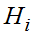
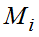
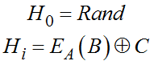
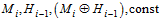
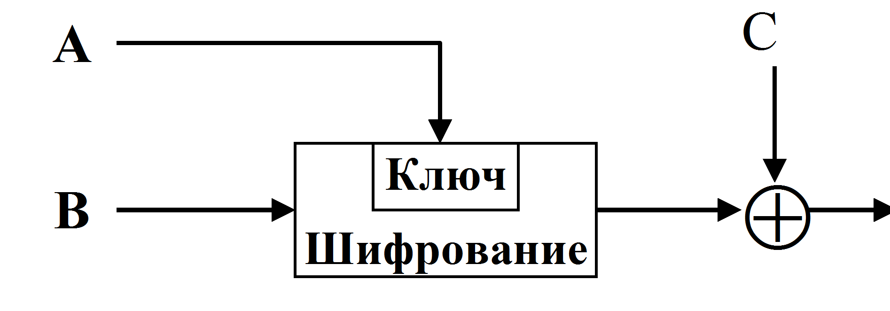
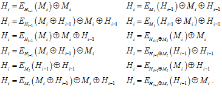
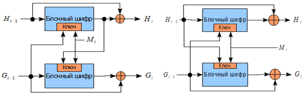

Наиболее простым способом построения хэш-функции является шифрование сообщения в режиме «сцепления блоков (CBC)» или «обратной связи по шифртексту (CBF)» с фиксированным ключом. При этом, хэш-значением будет последний блок шифртекста. Этот способ не рекомендуется к использованию, так как при шифровании с фиксированным ключом появляется возможность использовать различные методы криптоанализа. На практике используются схемы с модификацией ключа на каждом шаге. Пусть − текущее значение хэш-функции,  − текущий блок данных, тогда общая модель хэш-функции:
,
где значения A, B, C могут быть  (рис. 4.18).
 |
Рис. 4.18. Схема хэш-функции с длиной хэш-образа, равной длине блока шифрования |
Сообщение разбивается на блоки , обрабатываемые поочередно. Всего существует 64 различных варианта построения таких хэш-функций, но всего 12 из них являются безопасными и могут быть использованы на практике. Этими функциями являются:

В случае, если хэш-функция должна иметь размер, равный удвоенному размеру блока блочного шифра, можно использовать тандемную или одновременную схему Дэвиса − Мейера (рис. 4.19).
 |
Рис. 4.19. Схемы хэш-функций с длиной хэш-образа, равной удвоенному размеру блока шифрования |